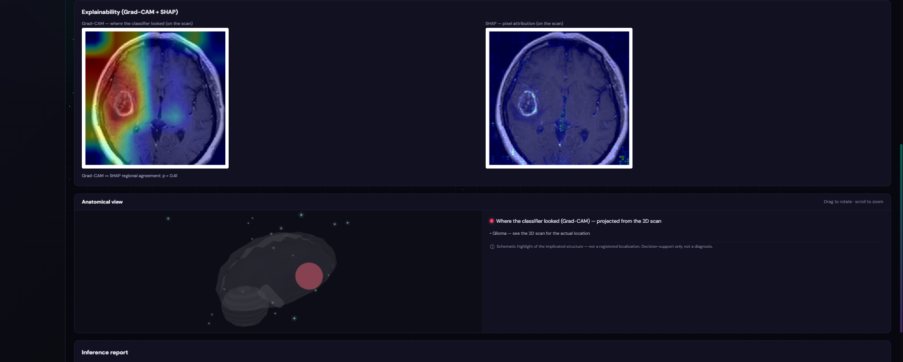
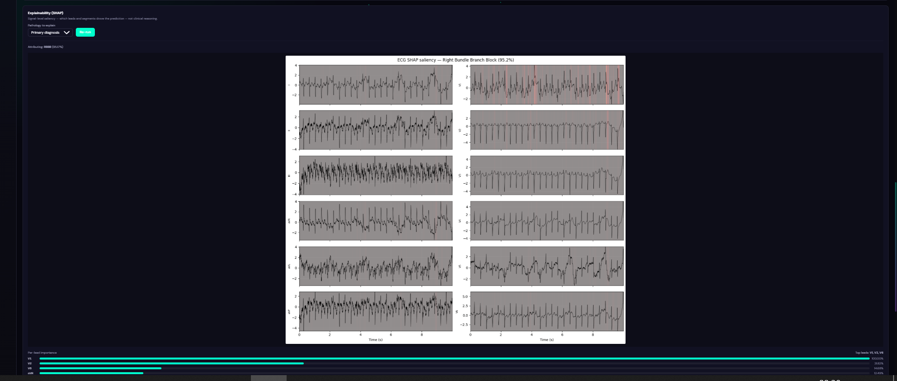
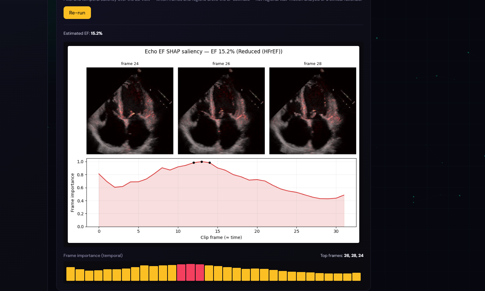
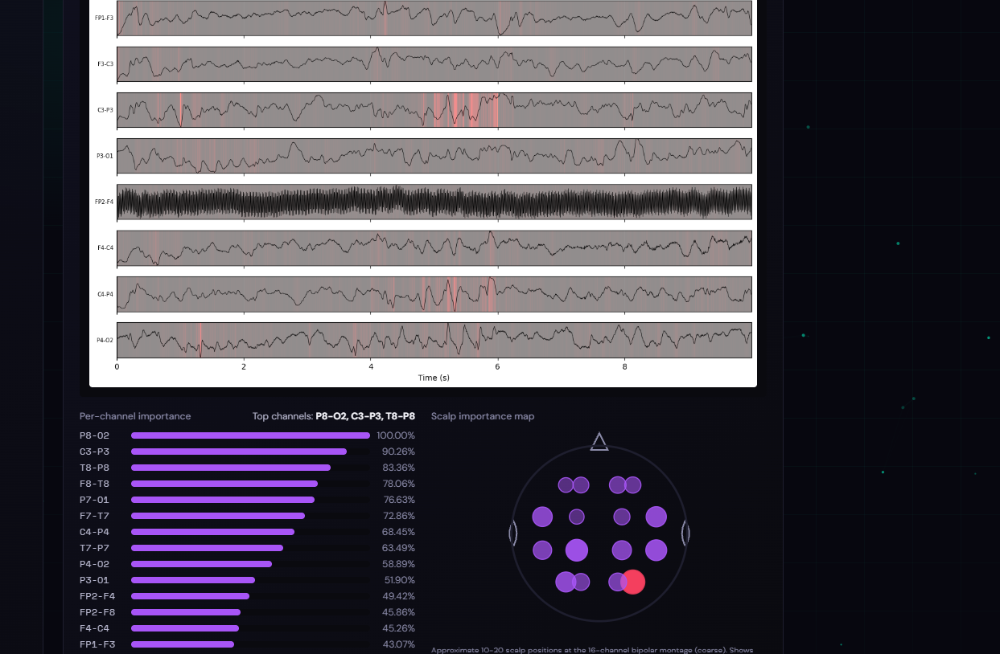

🧠NEURACARD
Multimodal Medical AI · Decision support
The problem
One patient — many separate tests
🧠Brain MRI
❤️12-lead ECG
❤️Echo
🧠EEG
Each test, read in isolation
🧠MRIRadiology
✕
❤️ECGCardiology
✕
❤️EchoCardiology
✕
🧠EEGNeurology
AI can read them — but one at a time
A verdict, with no reasoning
→
→
⚠️"Glioma · 94%"
…but why?
The full picture never comes together
The solution
One platform.Every modality.
Brain MRI12-lead ECG
EchocardiogramEEG
◆The Technician
Registers, then prepares & uploads the raw data — ready for analysis
▶The Doctor — an ECG, end to end
Log in → open a patient → run the ECG → read the result → click SHAP for the reasoning → save
01Brain MRI
The tumour is detected and classified — and you see exactly where it looked
02Echocardiogram
Ejection fraction & chamber segmentation, from the echo loop
03EEG
Screening the brain-wave recording for harmful activity
Trust, not a black box
Every model explains itself
MRI · Grad-CAM + SHAP
ECG · SHAP saliency
Echo · EF SHAP saliency
EEG · channel saliency
One picture
And it brings them together.
Findings from brain and heart combine into a single, readable interpretation — not four disconnected results.
→The payoff
Every test flows into one combined PDF report — ready for the doctor to use
What's next
- Learned multimodal fusion — uncover brain–heart links no single test can reveal
- Prospective validation with a hospital partner, on real patients
- To the bedside — continuous, real-time monitoring & wearables
- Hospital-ready — EHR integration, new modalities (CT, pathology, genomics) & private federated learning
🧠NEURACARD
Every signal — together.
From four tests read in isolation — to one clear, explainable, combined decision.
UnifiedExplainableOne report
Author · Supervisor · Jury — Université Constantine 2 · 2026
Research / educational prototype — not a certified medical device.